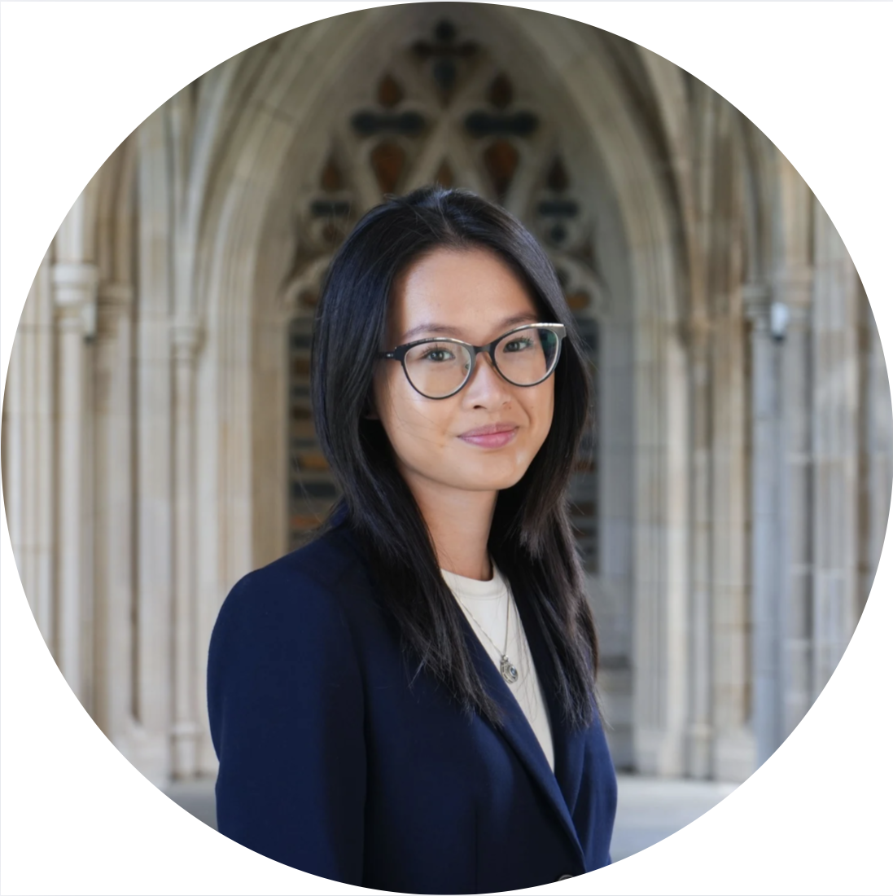

Hi! I'm Amy. I'm a Durham-based photographer and Duke student. I’m studying Computer Science with a minor in Mathematics, and I’m currently the Data Editor of The Chronicle, the student newspaper. I was previously the Photo Photo Editor, and I covered stories ranging from Governor Tim Walz and President Clinton on the Harris campaign trail to March Madness for Duke Men’s Basketball.
Outside of photojournalism, I often shoot graduation photos for Duke seniors! For Fall 2026 and Spring 2027 inquiries, please email me at amy.zhang@duke.edu. Graduation photo session spots (for groups and individuals) are opened once the previous academic semester ends.
My past technical experiences include full-stack development projects sponsored by Apple, front-end software engineering at Duke's CFCI, and research on nuclear conflict modeling using machine learning. I was previously a Software Engineering Intern at Fidelity Investments, and for Summer 2026, I'll be joining BlackRock's Aladdin Engineering Group in NYC. I'm currently a Research Assistant in the Argus Lab at the Pratt School of Engineering. I'm broadly interested in fintech, media authenticity, AI security, and photo-journalism.
